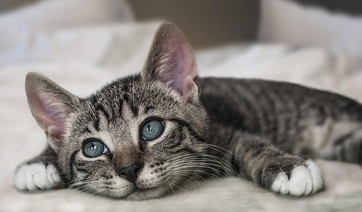

Ngày đăng: 20/10/2026 | Tác giả: Catlife5 Dấu Hiệu Cho Thấy Mèo Cưng Đã Sẵn Sàng Kết Đôi
Khi bước vào độ tuổi từ 10 đến 12 tháng, các bé mèo bắt đầu có những biểu hiện gọi bạn đời rất đặc trưng như kêu nhiều hơn vào ban đêm và làm nũng chủ...
Đọc Tiếp Bài Viết